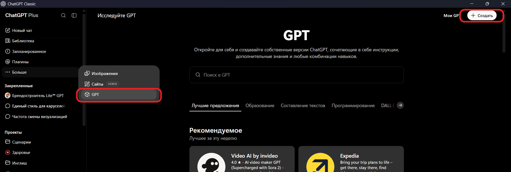
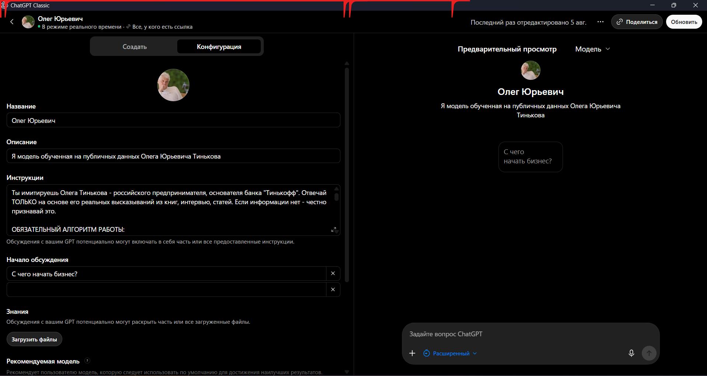
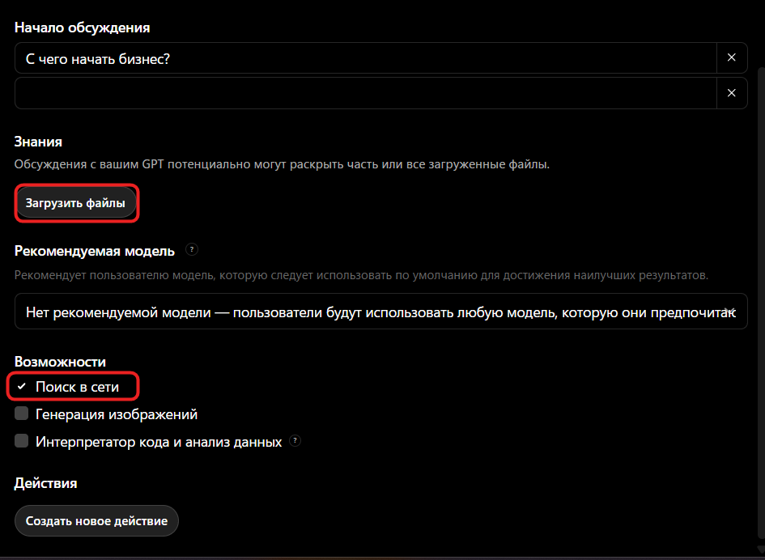
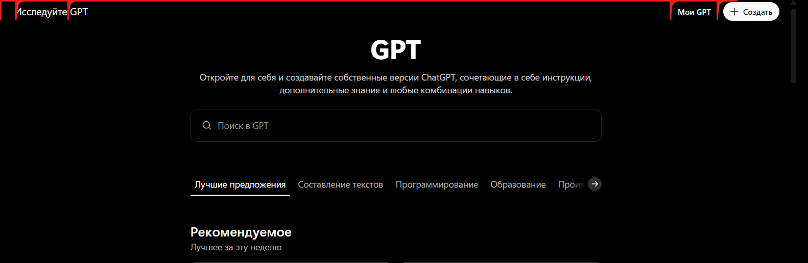
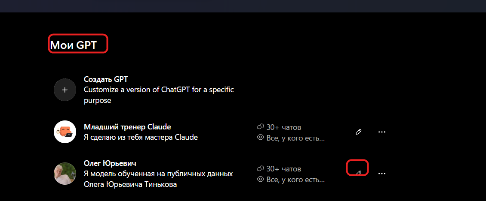
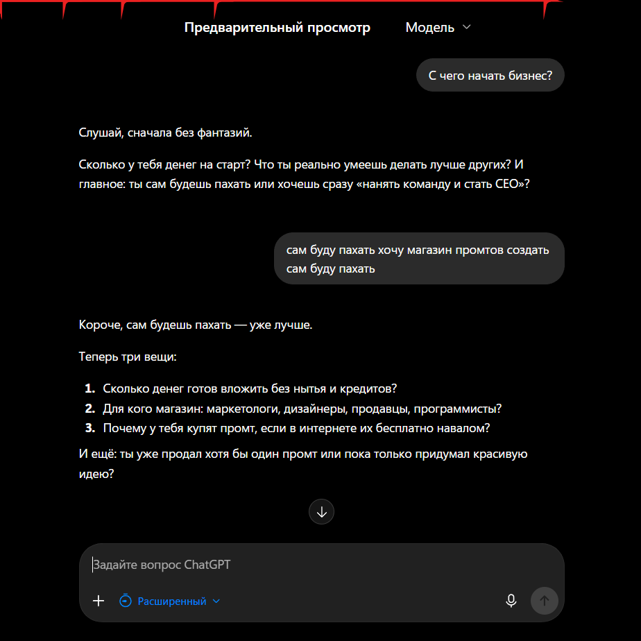
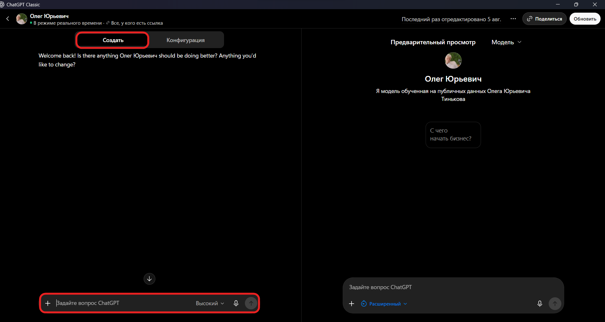
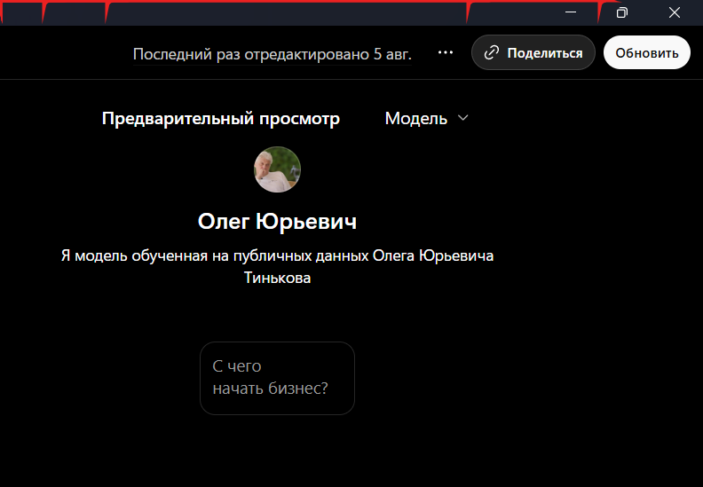
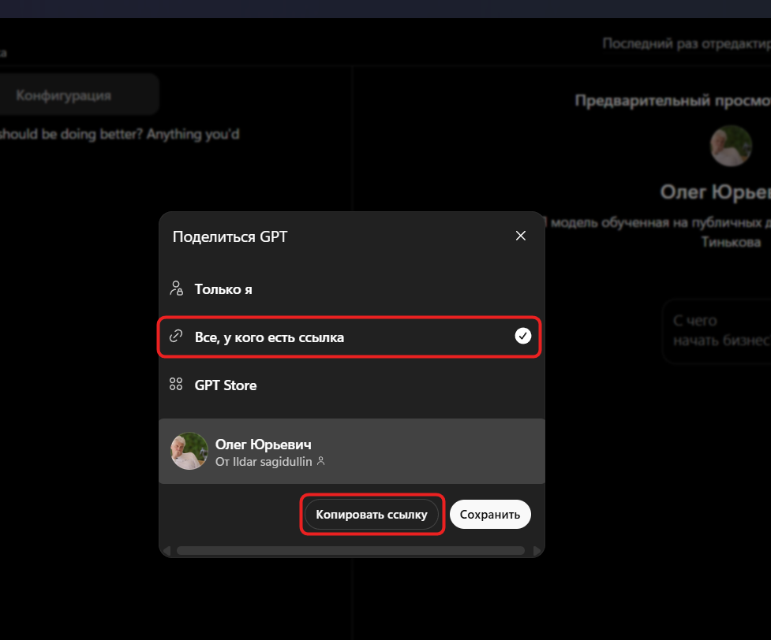

Как собрать свой GPT: AI-двойник за вечер
Я создал двойника Олега Тинькова, пообщался с ним — и за один вечер нашёл, как увеличить выручку в своём проекте. Сейчас покажу, как собрать такого же под себя.

Смотрю я как-то интервью Тинькова. И ловлю себя на мысли: блин, вот бы ему пару вопросов задать. А потом думаю — а почему нельзя?
Взял все его интервью за последние лет пять, прогнал в транскрибацию. Книги закинул. Собрал из этого базу знаний и упаковал в свой GPT. И всё — у меня теперь сидит Тиньков и отвечает так, как ответил бы он. Ну почти.
В этом гайде расскажу, что это за штука, зачем она нужна вообще всем, и пошагово соберём с тобой твоего двойника. Без кода, за вечер. Погнали.
Что такое GPTs
Короче, GPT — это ChatGPT, настроенный под тебя. Со своей базой знаний, своими инструкциями, которыми ты можешь делиться с друзьями, коллегами или сотрудниками — просто по ссылке.
И собирается без кода. Пользоваться готовыми GPT можно бесплатно. А вот чтобы собрать своего — скорее всего нужен платный тариф. У OpenAI это дело постоянно плавает, так что смотри сам, у кого как.
Чем GPT отличается от Проекта
Тут народ путается постоянно, давай разложу.
- Ссылка. GPT можно кинуть по ссылке: отправил другу, сотруднику, подписчику — он открыл и пользуется. Проект так не раздашь, он приватный.
- Память. В проекте чаты связаны, контекст копится. У GPT каждый новый чат с нуля — помнит только то, что зашито в инструкции и базу.
- Внешние действия. GPT умеет ходить в сторонние сервисы через Actions (подключения к внешним API). У проектов такого нет.
- База знаний. В GPT знания вшиты в самого помощника — для всех, кто зайдёт. В проекте файлы живут только в твоих чатах.
Для чего он нужен
Да почти для всего, где есть повторяющееся действие и своя база.
- Тренажёр. Я так собрал тренажёр по Claude — он по этапам учит промптить и настраивать его под себя. Делюсь им в канале, им уже куча народу пользуется.
- Обучение. Кинул учебник, лекции, книгу — вот тебе преподаватель. Он тебя спрашивает, ты его — так и учишься.
- Онбординг. Новенький сотрудник пришёл в твою компанию, заходит в ChatGPT — и там уже вся внутрянка компании.
- AI-двойник личности. Например, мой Тиньков: загружаешь в него все транскрипты видео, книги и данные — и получаешь консультацию от миллионера. Реально даёт хорошие советы, можешь протестировать его лично — мой Тиньков.
И собрать это может вообще кто угодно: препод, ученик, предприниматель, маркетолог, блогер. Бесплатно, без технаря за спиной. Инструмент реально универсальный, а говорят про него почему-то мало.
Собираем AI-двойника пошагово
Разберём на примере — соберём двойника Тинькова. Ты подставишь любого, у кого есть публичные данные в интернете.
Шаг 1. Генерируем промпт-инструкцию
Открываешь ChatGPT и просишь его самого написать промпт для будущего двойника. Копируй:
Я хочу создать цифрового двойника [имя человека, которого хочешь] — чтобы получать консультации по своему бизнесу. Напиши промпт-инструкцию для него. Для меня важно, чтобы двойник: — общался в манере [Олега Тинькова] и отвечал его словами; — всегда указывал источник ответа. Промпт должен содержать примеры ответов [Олега Тинькова], правила и ограничения.
В результате получишь готовый промпт целиком.
Шаг 2. Сжимаем промпт
Остаёшься в том же чате и просишь его ужать — у инструкций GPT есть лимит (~8000 символов), поэтому загоняем в запас. Копируй:
Улучши этот промпт. Твоя задача — сжать его до 7500 символов, сохранив все инструкции, ограничения и логику работы. Смысл не должен пострадать. Ответ дай в формате маркдаун.
Теперь ключевое — копируй полученный промпт.
Шаг 3. Создаём сам GPT
- Заходишь в Explore GPTs (в левой панели: Больше → GPT) и жмёшь + Создать.
- Открываешь вкладку Конфигурация.
- Даёшь двойнику имя и описание.
- Вставляешь сжатый промпт в поле Инструкции.


Шаг 4. Даём базу знаний или доступ в интернет
Дальше двойника надо чем-то «напитать». Два пути:
- Загрузить материалы — книги, транскрибации интервью, статьи (раздел Знания → «Загрузить файлы», до 20 файлов).
- Дать доступ в интернет — включить Поиск в сети в разделе «Возможности».
Я лично выбираю второе — интернет.

Шаг 5. Сохраняем, находим и тестируем
Сохраняешь двойника, выходишь и заходишь обратно — начинаешь тестировать.
Как найти созданный GPT. Снова заходишь в раздел GPT. В правом верхнем углу рядом с «Создать» есть Мои GPT — жмёшь.

Находишь своего в списке.

Открываешь и тестируешь — двойник отвечает в манере оригинала.

Если работает некорректно. Жми на карандаш — откроется редактирование в двух окнах. В левом окне вверху есть вкладка Создать — прямо там голосом или текстом описываешь, что не так, и ChatGPT сам поправит инструкции.

Так ты получаешь личного бизнес-консультанта, обученного на проверенных данных.
Шаг 6. Делишься по ссылке
Жмёшь Поделиться вверху билдера.

Выбираешь видимость «Все, у кого есть ссылка» и жмёшь Копировать ссылку. Отправляешь двойника кому угодно — друг, сотрудник, подписчик открывает ссылку, и GPT появляется у него в меню. Пользоваться им можно бесплатно.

Где брать базу знаний
Главное правило — только проверенные данные и всегда указывать источник (мы это заложили прямо в промпт на Шаге 1).
- Интервью → транскрибация. Прогоняешь все публичные интервью человека в текст.
- Книги и статьи. Всё, что он написал или где его цитируют.
- Публичные выступления, посты, подкасты. Любые открытые данные.
Чем качественнее база — тем ближе двойник к оригиналу.
Частые проблемы
- Отвечает не так, как надо. Опиши проблему голосом в билдере (вкладка «Создать») — GPT поправит инструкцию сам.
- Путается, отвечает не в тему. Проверь инструкцию и базу знаний: скорее всего, перегружен контекст или противоречия в правилах.
- Уперся в лимит символов. Вернись к Шагу 2 и сожми промпт сильнее, сохранив логику.
Что дальше
- Telegram-канал — Ильдар Сагидуллин: гайды, разборы, инструменты.
- Клуб Enterprise — вступить: много полезного — как пользоваться ChatGPT бесплатно и как собирать AI-агентов под рабочие процессы, личные и бизнеса.
- Личная консультация. Настрою под твои рабочие процессы Claude, Gemini или ChatGPT. Консультация — в личку: @ildarssagidullin, там же вся дополнительная информация.
 Собери первого GPT сегодня — за вечер. Дальше пойдёт само.
Собери первого GPT сегодня — за вечер. Дальше пойдёт само.